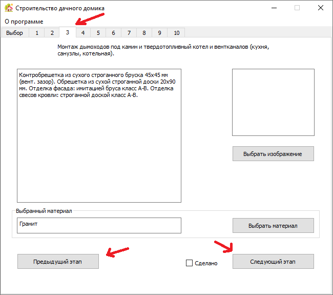

На каждой из страниц этапов строительства есть: краткое описание шага строительства, выбранный материал с возможностью изменить его, поле с отметкой "Сделано", если пользователь уже выполнил выбраный шаг
Так же, на каждом из шагов строительства, пользователь может самостоятельно загружать фотографии к выбранному этапу
У пользователя есть возможность переключаться между шагами либо нажимая кнопки "Предыдущий этап", либо "Следующий этап", а так же выбором нужного шага нажатием на номер данного шага
